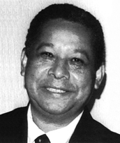

Nascido em Porto Nacional/TO, Edivaldo Rodrigues mudou-se para Goiânia em 1977 para ingressar na universidade. Na capital, atuou como professor e servidor público em órgãos como o Detran, a Saneago e o Ministério das Minas e Energia, além de atuar como assessor governamental.
Na área jornalística, colaborou com diversos veículos da capital e do interior. Em 1987, junto com seu irmão Edson Rodrigues, fundou o jornal O Paralelo 13. Com formação em História pela UFC e curso de Direito em andamento, retornou a Porto Nacional em 1989 para assumir a Secretaria de Administração na gestão do prefeito Vicente Alves de Oliveira.
De 1990 a 1994, integrou a assessoria do governador Moisés Avelino. Após esse período, voltou à direção de O Paralelo 13, onde atua como editor-chefe e diretor executivo, assinando colunas, artigos e editoriais. Foi eleito presidente da Associação Tocantinense de Imprensa (ATI) e atualmente ocupa o cargo de secretário de Comunicação de Porto Nacional.
